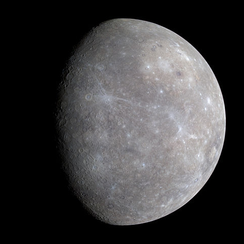
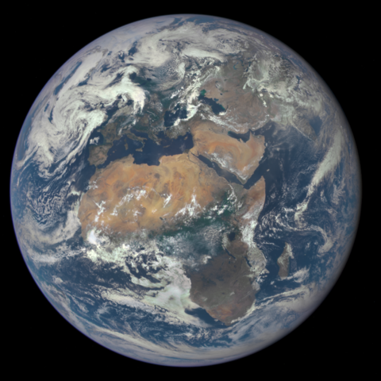
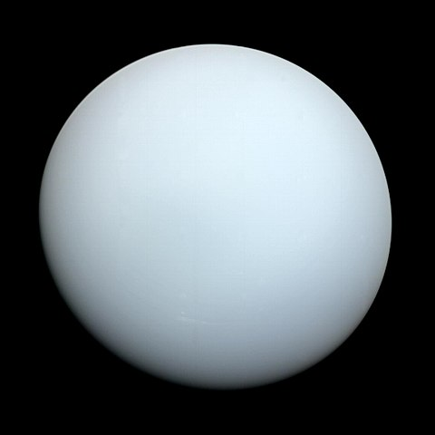
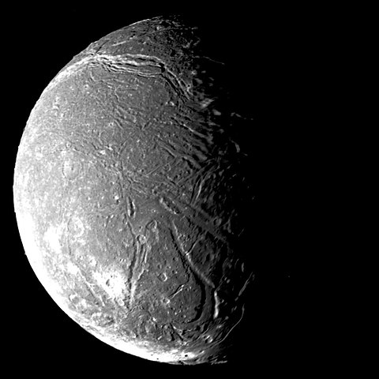
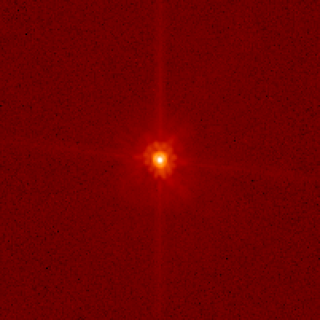

Найбільші супутники планет Сонячної системи
Порівняльні розміри планет "земної групи" і найбільших супутників Сонячної системи
Планети та їхні найбільші супутники
Цифрами
червоного
кольору позначено кількість супутників планети
Цифрами
блакитного
кольору позначено місце супутника за розміром (топ-20)
Меркурій (4879 км)
0

Венера (12104 км)
0
Земля (12756 км)
1

Місяць (3476 км)
5
Марс (6792 км)
2
Фобос (22 км)
Деймос (12 км)
Церера (940 км)
0
Юпітер (142984 км)
79
Ганімед (5262 км)
1
Калісто (4821 км)
3
Іо (3643 км)
4
Європа (3122 км)
6
Сатурн (120536 км)
82
Титан (5149 км)
2
Рея (1527 км)
9
Япет (1470 км)
11
Діона (1123 км)
15
Тефія (1062 км)
16
Енцелад (504 км)
17
Мімас (396 км)
20
Уран (51118 км)
27

Титанія (1577 км)
8
Оберон (1523 км)
10
Умбріель (1169 км)
13
Аріель (1158 км)
14

Міранда (472 км)
18
Нептун (49528 км)
14
Тритон (2705 км)
7
Протей (420 км)
19
Плутон (2370 км)
5
Харон (1212 км)
12
Хуамеа (1436 км)
2
Хіїака (310 км)
Намака (170 км)
Макемаке (1434 км)
1

S/2015 (136472) 1 (175 км)
Ерида (1163 км)
1
Дизмонія (? км)